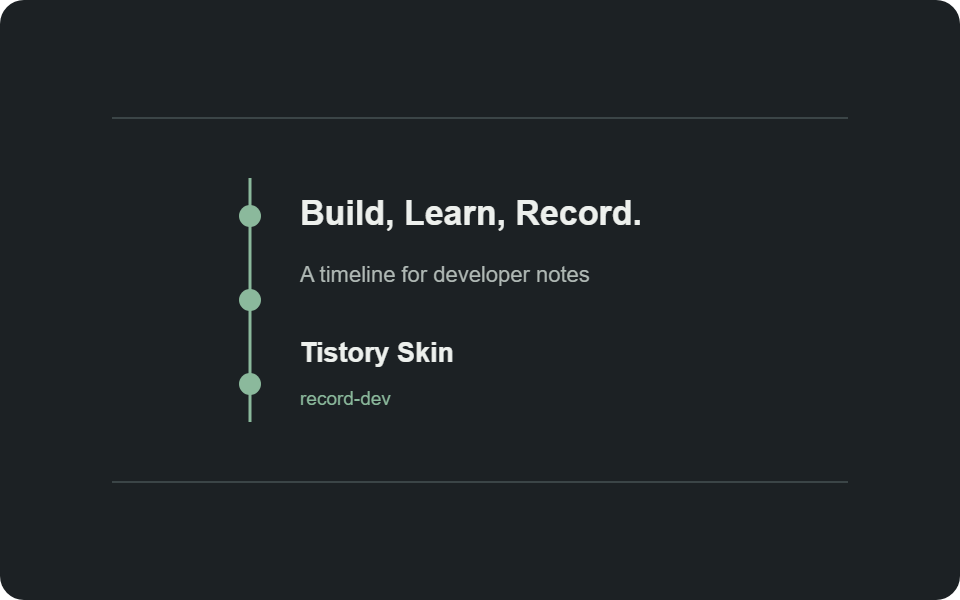

티스토리 스킨을 직접 만들며 배운 것들
개발 기록을 오래 쌓아둘 공간이 필요해서 티스토리 스킨을 직접 만들었습니다. 완성된 디자인부터 정한 것이 아니라 더미 데이터를 채운 화면을 계속 살펴보며 구조와 간격을 다듬었습니다.

왜 직접 만들었나
트러블슈팅, 코드 리뷰, 대회 후기와 회고처럼 성격이 다른 글을 한곳에 쌓으려면 카테고리와 시리즈가 자연스럽게 연결되어야 했습니다. 그래서 화려한 장식보다 다시 찾기 쉬운 구조를 먼저 목표로 삼았습니다.
더미 데이터로 구조부터 검증하기
실제 글이 쌓이기 전에 날짜, 제목, 요약, 태그가 서로 다른 예시 글을 만들었습니다. 긴 제목과 이미지가 없는 글, 모바일 화면까지 미리 확인하니 디자인만 봤을 때 놓치던 문제를 빠르게 찾을 수 있었습니다.
홈 화면 구성
글은 월별 타임라인으로 배치하고 대표 이미지가 있는 글만 썸네일을 보여줍니다. 제목뿐 아니라 둥근 글 블록 전체를 클릭할 수 있게 만들었고, 마우스를 올리면 타임라인의 원과 글 블록이 함께 커지도록 구성했습니다.
카테고리 트리
상위 카테고리 아래에 세부 주제를 두고 필요한 가지만 접거나 펼칠 수 있습니다. 티스토리가 전달하는 카테고리 목록을 JavaScript로 보강해 트리처럼 동작하게 했습니다.
글 화면과 목차
본문 오른쪽에는 제목 태그를 기준으로 목차가 자동 생성됩니다. 본문과 목차가 따로 노는 느낌이 들지 않도록 두 영역의 간격도 줄였습니다.
만들면서 배운 점
티스토리 스킨은 정적인 HTML 템플릿처럼 보이지만 실제 데이터는 치환자가 채웁니다. 브라우저에서 먼저 더미 데이터로 화면을 검증하고, 마지막에 치환자를 연결하는 방식이 디자인과 데이터 문제를 나눠 해결하는 데 도움이 됐습니다.